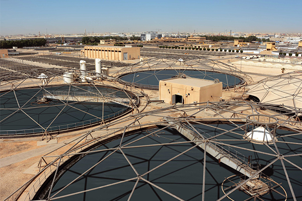
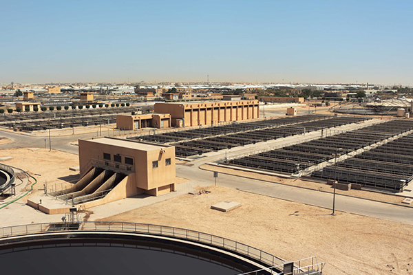
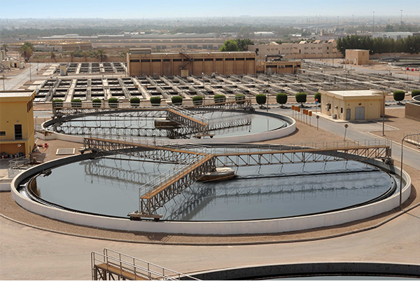

Будущее человечества неразрывно связано с переходом от традиционной экономики, которая истощает природные ресурсы и наносит ущерб окружающей среде, к эко-экономике, которая обеспечивает сохранение нужных условий для жизни будущих поколений.
Эко-экономика позволяет повышать благосостояние людей, обеспечивать социальную справедливость и одновременно существенно снизить риски деградации окружающей среды. Под эко-инновациями или «зелёными» технологиями подразумеваются такие технологии и инновации, которые обеспечивают двойной результат: как экологическую, так и социально-экономическую эффективность.
Объявленная руководством КСА программа всесторонних глубоких преобразований будет способствовать развитию технологий и принципов эко-экономики, в том числе в такой жизненно важной отрасли, как водопользование. Одной из главных задач этой отрасли является обеспечение повторного использования всей очищенной воды для нужд аграрного сектора, промышленности, городского хозяйства и связанная с этим задача обеспечения высокого качества очистки.
Сегодня на большинстве действующих очистных сооружений муниципальных сточных вод в КСА используются европейские технологии очистки прошлого века. Даже при строительстве новых станций современные технологии по каким-то причинам не внедряются.
Строительство очистных сооружений по устаревшим технологиям влечет за собой как дополнительные капитальные затраты, так и повышенные расходы на эксплуатацию. Вместе с тем в КСА имеются большие перспективы для успешного внедрения инновационных решений, и доказательством тому служит опыт работы в Саудовской Аравии специалистов компании ЭКОС.
Российская компания ЭКОС специализируется в области проектирования, строительства и реконструкции бытовых и промышленных сточных вод и реализовала уже более 400 различных проектов.
Научно-исследовательский центр и проектный институт ЭКОС разрабатывают новые технологические и проектные решения, многие из которых защищены патентами. Компания впервые вышла на рынок Саудовской Аравии в 2006 году, получив возможность применить новейшие российские технологии при реконструкции очистных сооружений «Аль-Джазира» в столице Королевства.

Станция, рассчитанная на 3000 куб.м. в день, была перегружена в два раза и фактически принимала 5000 куб. м. сточных вод в сутки. Основными целями проекта были: увеличение производительности очистных сооружений; повышение качество очистки воды на 60-70% с целью ее повторного использования для полива.
В результате применения собственных разработок ЭКОС удалось повысить эффективность очистки воды на 78%, а производительность станции на 70%, при этом прирост эксплуатационных затрат составил всего 10%.
Результаты работы были подтверждены ведущим экспертом компании Veolia, которая является признанным мировым лидером в области очистки сточных вод.

Станция, рассчитанная на 3000 куб.м. в день, была перегружена в два раза и фактически принимала 5000 куб. м. сточных вод в сутки. Основными целями проекта были: увеличение производительности очистных сооружений; повышение качество очистки воды на 60-70% с целью ее повторного использования для полива.
В результате применения собственных разработок ЭКОС удалось повысить эффективность очистки воды на 78%, а производительность станции на 70%, при этом прирост эксплуатационных затрат составил всего 10%.
Результаты работы были подтверждены ведущим экспертом компании Veolia, которая является признанным мировым лидером в области очистки сточных вод.
В 2013 году Министерство воды и электричества КСА и Национальная Водная Компания доверили Российским специалистам сложный проект - реконструкцию крупнейших очистных сооружений в Эр-Рияде - Северной и Восточной станций очистки сточных вод «Манфуха».
Необходимость реконструкции была обусловлена возрастающей нагрузкой на очистные сооружения, вызванной быстрыми темпами развития столицы. Суммарная проектная мощность двух станций составляла 400 000 м³/сут. По условиям проекта требовалось повысить ее на 25%, до 500 000 м³/сут. и значительно улучшить качество очистки до стандартных показателей, позволяющих повторно использовать очищенную воду. При этом требовалось применить нестандартные инженерные решения, чтобы провести реконструкцию очистных сооружений без остановки их работы и без строительства дополнительных емкостей в условиях ограниченной территории.
Специалистами ЭКОС Групп было принято решение о внедрении на станции «Манфуха» собственной запатентованной технологии очистки сточных вод IBR (Immobilized Biofilm Reactor) с реализацией процесса ANAMMOX.
Бактерии Анаммокс – одни из древнейших бактерий, живущие в глубинах Мирового Океана. Эти бактерии играют ведущую роль в поддержании азотного баланса в биосфере, поэтому можно сказать, что благодаря их деятельности существует жизнь на планете Земля.
Первые лабораторные исследования, связанные с попыткой использовать бактерии Анаммокс для очистки сточных вод, были проведены сравнительно недавно, в 2006 году. Компания ЭКОС успешно применяет данную технологию в промышленных масштабах, начиная с 2009 г. В частности, она была эффективно применена при строительстве очистных сооружений на объектах Зимних Олимпийских игр SOCHI-2014. В 2015 году компания получила государственную премию за разработку совместно с Академией наук России научных основ применения новой технологии.
Технология Анаммокс обеспечивает эффективное удаление аммонийного азота и других загрязнений из сточных вод и таким образом позволяет хранить очищенную воду длительное время перед ее использованием. Этот эффект очень важен в условиях жаркого климата Саудовской Аравии, так как предупреждает повторное загнивание очищенной воды во время ее хранения и доставки потребителям.
Говорит директор представительства ЭКОС в КСА Фомичев В.Д.:
«С гордостью хотим отметить, что нам удалось успешно применить технологию Анаммокс впервые не только в истории очистных сооружений Саудовской Аравии, но и на всем азиатском континенте. Благодаря этому мы получили нулевые показатели по остаточному аммонийному азоту, который является самым сложным загрязнением в сточной воде. Все остальные показатели очищенной воды также лучше, чем требуется по условиям контракта, несмотря на то, что количество загрязнений в поступающей на очистку воде зачастую превышало допустимые проектные показатели, порой на целые 50%.
Особо хочу отметить энергоэффективность примененных нами технологических решений: при повышении проектной производительности на 25% и улучшении качества очистки в несколько раз удельный расход электроэнергии на 1м3 очистки снизился более, чем на 25%. Таким образом суммарная экономия электроэнергии за 2015 год по сравнению с2013 годом составила боле 11 миллионов киловатт-часов.

Очищенная вода подается на орошение в требуемых количествах, начиная с ноября 2015 года. По нашим подсчетам, учитывая действующую цену продажи очищенной воды, если вся вода будет поставляться по этой цене потребителям, проект реконструкции станции «Манфуха» будет окуплен за 1,5 – 2 месяца эксплуатации.
Во время выполнения проекта Манфуха специалисты ЭКОС посетили станции очистки сточных вод в различных городах Саудовской Аравии: Медине, Джидде, Джубайле, Бурейде, Хите , и везде им говорили о проблеме вторичного загнивания воды после очистки, что очень затрудняет возможность ее повторного использования. Наша компания готова распространить успешный опыт проекта Манфуха на другие аналогичные объекты и обеспечить желаемый результат.
Еще одна важная проблема, связанная с очисткой сточных вод, – утилизация осадка, который образуется в большом количестве на очистных сооружениях (для КОС Манфуха это более 200 тыс. тонн в год, а в масштабах всего Королевства –миллионы тонн отходов в год).
Для решения этой проблемы мы в настоящее время ведем исследования с привлечением ведущих российских ученых в области теоретической физики, нацеленные на разработку технологии переработки осадка, которая позволит не только нейтрализовать вредное воздействие отходов на окружающую среду, но и получать из них энергию в количестве, достаточном для работы очистных сооружений. Разработаны теоретические основы новой технологии, сконструирована опытная установка и ведутся ее испытания. Мы рассчитываем на успешное завершение этой работы в ближайшем будущем, в результате чего на очистных сооружениях из поступающей сточной воды будут получаться: качественная, пригодная к широкому использованию вода, электроэнергия, тепловая энергия, которая, как известно, может быть конвертирована для использования в системах охлаждения.
Успешное внедрение технологий эко-экономики предполагает активное привлечение компаний частного сектора для инвестиций в новые перспективные разработки и участия в реализации проектов на условиях, получивших название ВОО и ВОТ. Для участия в таких проектах ЭКОС наладила сотрудничество с крупной саудовской группой компаний «СИДР Груп». Принято решение о создании совместного предприятия, которое объединит инженерно-технический потенциал ЭКОС и финансовые, административные и производственные возможности СИДР. В наших совместных планах участие в государственных тендерах, реализация инвестиционных проектов, организация производства блочно-модульных очистных станций, заключение долгосрочных сервисных контрактов.»